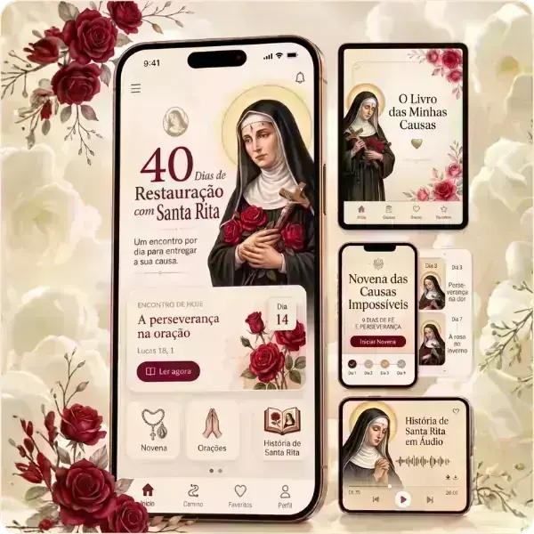
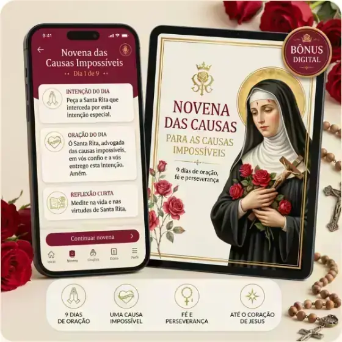

Seu Devocional de 40 Dias está pronto.
Um encontro por dia com Santa Rita para ela levar a sua prece até Jesus e você não carregar isso sozinha.

Junto com a jornada, o seu acesso já inclui:

🌹 Novena das Causas Impossíveis (R$47) grátis
Nove dias de oração mais intensa, para quando a aflição apertar e você precisar se recolher. Comece junto com a jornada ou guarde para a hora em que mais precisar.
📖 O Livro das Minhas Causas (R$27) grátis
Hoje você sabe exatamente quanto essa causa pesa. Daqui a alguns meses, muita coisa pode ter mudado. Aqui você registra suas intenções, o que viveu na espera e as graças que quiser guardar. Porque algumas respostas de Deus só ficam claras olhando o caminho inteiro.
🙏 Orações para Cada Causa (R$27) grátis
Restauração do casamento. Conversão de quem você ama. Cura. Libertação de um vício. Recomeços. Paz dentro de casa.
Para os dias em que você sabe o que dói… mas não sabe como transformar isso em oração.
🎧 A História de Santa Rita em Áudio (R$19) grátis
Você já conhece um pedaço da história dela. Ouvi-la inteira, com calma, muda o jeito como você entende a intercessão dela. Porque Santa Rita não virou a santa das causas impossíveis por ter vivido uma vida fácil. Muito pelo contrário.
Garantia incondicional de 30 dias
Eu tenho certeza de que esses 40 dias vão ser uma bênção na sua vida, e por isso o risco é todo meu, não seu.
Comece hoje. Reze a Novena, registre suas intenções no seu Livro, viva os primeiros encontros. Se em até 30 dias você sentir, por qualquer motivo, que isso não é para você, basta me enviar uma mensagem. Devolvo cada centavo, sem perguntas e sem complicação.
Você não tem nada a perder. Só uma caminhada inteira a ganhar. 🙏
🌹 A sua causa já foi entregue. Agora, comece a travessia.
Você não precisa resolver nada hoje. Nem saber como termina. Nem ter força para 40 dias de uma vez.
Hoje, você só precisa viver o primeiro.
Amanhã tem outro encontro. Depois, outro. E quando a aflição tentar voltar, você vai ter para onde ir.
Uma oração. Uma entrega. Um dia de cada vez.
R$37,00
Pagamento único · acesso imediato · 30 dias de garantia · acesso por 1 ano
Santa Rita, advogada das causas impossíveis, rogai por nós. 🌹